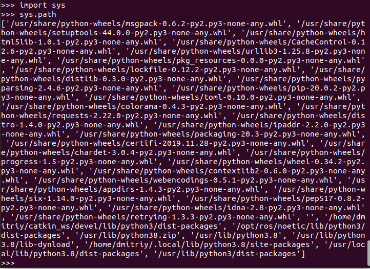

Введение в Python
Ссылки на учебники: Самоучитель PythonЯзыки программирования делятся на два типа:
- Компилируемые
Специальная программа, компилятор, преобразует исходный код в машинный.
Полученный в результате файл готов к исполнению без дополнительных инструментов.
Примеры: C++, Colang, Rust - Интерпретируемые
Код исполняется строчка за строчкой специальной программой - интерпретатором.
Исполнение возможно только при наличии этой программы.
Примеры: Python, Lua, JavaScript.
Установка Python на linux системы (Ubuntu, Debian и другие)
Откройте консоль (обычно ctrl+alt+t). Введите в консоли:python3Скорее всего, вас любезно поприветствует python:
dmitriy@945G-M3:~$ python3 Python 3.8.10 (default, Sep 11 2024, 16:02:53) [GCC 9.4.0] on linux Type "help", "copyright", "credits" or "license" for more information. >>>или узнать версию python:
dmitriy@945G-M3:~$ python3 --version Python 3.8.10Если это так, то можно вас поздравить: у вас уже стоит python. В противном случае нужно установить пакет *python3*:
sudo apt install python3
На чем писать код и как выпонять?
- VS code и Pycharm
для моего компьютера очень тяжелые. - В python для linux нет предустановленной среды IDLE. Если хотите, её можно установить отдельно. Пакет называется idle3 (в более ранних версиях он может называться python3-idle).
Однако, её установка не является обязательной. Вы можете писать в своём любимом текстовом редакторе (gedit, vim, emacs...) и запускать программы через консоль:
python3 path_to_file.pyКак писать на IDLE
- https://repl.it/
Начал на нем. - Jupyter Notebook
Чтобы начать на нем работать, команда:jupyter notebook
- Shebang — это специальное выражение, которое указывается в начале файла исполняемого скрипта. Оно сообщает системе, какой интерпретатор использовать для запуска скрипта.
В случае с Python это может быть один из двух вариантов:
/usr/bin/env python. Более переносимый вариант, который позволяет системе самой найти нужный интерпретатор Python.
/usr/local/bin/python. Требует, чтобы интерпретатор Python был установлен именно в этом месте.
Использование shebang не является обязательным для Python-скриптов. Оно полезно, если скрипт предназначен для запуска из командной строки Unix как самостоятельная программа. Если же скрипт запускается из другого Python-скрипта с помощью функции exec() или подобных, то shebang не требуется.
Написал простой код 1.py:
#!/usr/bin/env python print("aggggggg")Если выполнить скрипт, просто: 1.py
то команда не найдена.
если: source 1.py
то синтаксическая ошибкаПрочитал, что требуется указывать полный путь к скрипту для его выполнения. Выполнил:
/usr/bin/python3 ~/Python/1.py
Выполнился без ошибок. После этого:~/Python/1.py /usr/bin/env: «python»: Нет такого файла или каталогаОчевидно неправильный шебанг.
Исправил:#!/usr/bin/env python3 print("aggggggg")Снова: ~/Python/1.py
Теперь выполнился и без ошибок.Если все же выполнить:
1.py 1.py: команда не найдена
То есть все равно нужно указывать явный путь к файлу.py - Интерактивный режим:
Выполняем команду: python3 и далее можно выполнять команды сразу после каждой строки.
Выход из интерактивного режима: нажатие Ctrl+z
Синтаксис
Синтаксис языка Python очень прост.- Конец строки является концом инструкции (точка с запятой не требуется).
- Вложенные инструкции объединяются в блоки по величине отступов. Отступ может быть любым, главное, чтобы в пределах одного вложенного блока отступ был одинаков. Однако хорошим тоном считается отступ каждого блока в 4 пробела
- Вложенные инструкции в Python записываются в соответствии с одним и тем же шаблоном, когда основная инструкция завершается двоеточием, вслед за которым располагается вложенный блок кода, как правило, с отступом под строкой основной инструкции.
Основная инструкция: Вложенный блок инструкцийИмена
Имя может начинаться с латинской буквы (любого регистра) или подчеркивания, а дальше допустимо использование цифр. В качестве идентификаторов нельзя применять ключевые слова языка и нежелательно переопределять встроенные имена.
Имена, начинающиеся с подчеркивания или двух подчеркиваний, имеют особый смысл. Одиночное подчеркивание говорит программисту о том, что имя имеет местное применение, и не должно использоваться за пределами модуля. Двойным подчеркиванием в начале и в конце обычно наделяются специальные имена атрибутов - об этом будет говориться в лекции по объектно-ориентированному программированию.
В каждой точке программы интерпретатор "видит" три пространства имен: локальное, глобальное и встроенное. Пространство имен - отображение из имен в объекты.
Для понимания того, как Python находит значение некоторой переменной, необходимо ввести понятие блока кода. В Python блоком кода является то, что исполняется как единое целое, например, тело определения функции, класса или модуля.
Локальные имена - имена, которым присвоено значение в данном блоке кода. Глобальные имена - имена, определяемые на уровне блока кода определения модуля или те, которые явно заданы в операторе global. Встроенные имена - имена из специального словаря __ builtins __.
Области видимости имен могут быть вложенными друг в друга, например, внутри вызванной функции видны имена, определенные в вызывающем коде. Переменные, которые используются в блоке кода, но связаны со значением вне кода, называются свободными переменными.
Так как переменную можно связать с объектом в любом месте блока, важно, чтобы это произошло до ее использования, иначе будет возбуждено исключение NameError. Связывание имен со значениями происходит в операторах присваивания, from, import, в формальных аргументах функций, при определении функции или класса, во втором параметре части except оператора try-except.
С областями видимости и связыванием имен есть много нюансов, которые хорошо описаны в документации. Желательно, чтобы программы не зависели от таких нюансов, а для этого достаточно придерживаться следующих правил:
- Всегда следует связывать переменную со значением (текстуально) до ее использования.
- Необходимо избегать глобальных переменных и передавать все в качестве параметров. Глобальными на уровне модуля должны остаться только имена-константы, имена классов и функций.
- Никогда не следует использовать from модуль import * - это может привести к затенению имен из других модулей, а внутри определения функции просто запрещено.
Убрать связь имени с объектом можно с помощью оператора del. В этом случае, если объект не имеет других ссылок на него, он будет удален.
Стиль программирования
Наиболее существенные положения этого стиля перечислены ниже. В случае сомнений хорошим образцом стиля являются модули стандартной библиотеки.- Рекомендуется использовать отступы в 4 пробела.
- Длина физической строки не должна превышать 79 символов.
- Длинные логические строки лучше разбивать неявно (внутри скобок), но и явные методы вполне уместны. Отступы строк продолжения рекомендуется выравнивать по скобкам или по первому операнду в предыдущей строке. Текстовый редактор Emacs в режиме python-mode и некоторые интегрированные оболочки (IDE) автоматически делают необходимые отступы в Python-программах:
def draw(figure, color="White", border_color="Black", size=5): if color == border_color or \ size == 0: raise "Bad figure" else: _draw(size, size, (color, border_color)) - Не рекомендуется ставить пробелы сразу после открывающей скобки или перед закрывающей, перед запятой, точкой с запятой, перед открывающей скобкой при записи вызова функции или индексного выражения. Также не рекомендуется ставить более одного пробела вокруг знака равенства в присваиваниях. Пробелы вокруг знака равенства не ставятся в случае, когда он применяется для указания значения по умолчанию в определении параметров функции или при задании именованных аргументов.
- Также рекомендуется применение одиночных пробелов вокруг низкоприоритетных операций сравнения и оператора присваивания. Пробелы вокруг более приоритетных операций ставятся в равном количестве слева и справа от знака операции.
- Комментарии должны точно отражать актуальное состояние кода. (Поддержание актуальных комментариев должно быть приоритетной задачей!) После коротких комментариев можно не ставить точку, тогда как длинные лучше писать по правилам написания текста. Автор Python обращается к неанглоязычным программистам с просьбой писать комментарии на английском, если есть хотя бы небольшая вероятность того, что код будут читать специалисты, говорящие на других языках.
- Комментарии к фрагменту кода следует писать с тем же отступом, что и комментируемый код. После " # " должен идти одиночный пробел. Абзацы можно отделять строкой с " # " на том же уровне. Блочный комментарий можно отделить пустыми строками от окружающего кода.
- Комментарии, относящиеся к конкретной строке, не следует использовать часто. Символ " # " должен отстоять от комментируемого оператора как минимум на два пробела.
- Хороший комментарий не перефразирует программу, а содержит дополнительную информацию о действии программы в терминах предметной области.
- Строка документации для отдельной программы должна объяснять используемые ею ключи, назначение аргументов и переменных среды и другую подобную информацию.
- Для строк документации рекомендуется везде использовать утроенные кавычки ( """ ).
- Однострочная документация пишется в императиве, как команда: "делай это", "возвращай то".
- Многострочная документация содержит расширенное описание модуля, функции, класса. Она будет смотреться лучше, если текст будет написан с тем же отступом, что и начало строки документации.
- Документация для модуля должна перечислять экспортируемые функции, классы, исключения и другие объекты, по одной строке на объект.
- Строка документации для функции или метода должна кратко описывать действия функции, ее входные параметры и возвращаемое значение, побочные эффекты и возможные исключения (если таковые есть). Должны быть обозначены необязательные аргументы и аргументы, не являющиеся частью интерфейса.
- Документация для класса должна перечислять общедоступные методы и атрибуты, содержать рекомендации по применению класса в качестве базового для других классов. Если класс является подклассом, необходимо указать, какие методы полностью заменяют, перегружают, а какие используют, но расширяют соответствующие методы надкласса. Необходимо указать и другие изменения по сравнению с надклассом.
- Контроль версий повышает качество процесса создания программного обеспечения. Для этих целей часто используются RCS или CVS. "Python Style Guide" рекомендует записывать $Revision: 1.31 $ в переменную с именем __version__, а другие данные заключать в комментарии " # ".
- Имена модулей лучше давать строчными буквами, например, shelve, string, либо делать первые буквы слов заглавными, StringIO, UserDict. Имена написанных на C модулей расширения обычно начинаются с подчеркивания " _ ", а соответствующие им высокоуровневые обертки - с прописных букв: _tkinter и Tkinter.
- Классы обычно называют, выделяя первые буквы слов прописными, как в Tag или HTTPServer.
- Имена глобальных переменных (если таковые используются) лучше начинать с подчеркивания, чтобы они не импортировались из модуля оператором from-import со звездочкой.
- Имена констант (имен, которые не должны переопределяться) лучше записывать прописными буквами, например: RED, GREEN, BLUE.
Переменные
Для имени переменной используется любой набор допустимых символов: буквы английского алфавита, цифры, знак _. При этом цифру нельзя ставить в начале.В Python переменные являются лишь именованиями объектов. Ссылками на объекты, если так проще.
Присвоив, скажем, переменной b значение 5 (b = 5) - стоит помнить, что переменная b лишь ссылается на целочисленное значение 5.
При желании можно объявить переменную b хоть стоковым значением (b = str(b)) и это будет всё та же "5", но уже не целочисленная. И арифметических действий с ней уже не получится. Просто старое значение (ссылка) переменной будет стёрта и теперь она уже будет ссылаться на 5 - объект типа strint (str).
Точно также и с преобразованием во float - это будет ссылка уже на третий объект, 5.0 типа float.
Все три объекта в ходе этих операций не менялись, они неизменны. Просто переменная ссылалась то на один, то на другой.
По сути, когда вы присваиваете переменной значение - в памяти "создаётся объект". Если дальше значение в этой переменной изменилось, и на старый объект она больше не ссылается - то (при условии, что на старый объект не ссылается какая-нибудь другая переменная) так называемый "Сборщик мусора" (встроенная, автоматическая штука в компиляторе Python, которая облегчает нам всем жизнь) уничтожает этот самый объект (когда на него больше никакая переменная не ссылается, значит - он в памяти больше не нужен).
Так что да, технически - объекты этих типов не изменяемы. Надеюсь, не слишком сумбурно изложил.
Ещё:
В Python есть изменяемые и неизменяемые типы. Изменяемые отличаются тем, что их содержимое можно сменить, не изменив ссылку на них. Неизменяемые объекты приходится пересоздавать, чтобы отразить изменения состояния. При этом все старые ссылки не видят это обновление, потому что указывают на старый объект.
Поясню на практике. Списки, словари, множества - это изменяемые объекты:
l1 = [1, 2, 3] l2 = l1 print(l1, l2, id(l1), id(l2)) # [1, 2, 3] [1, 2, 3] 139917408901064 139917408901064 l1[1] = 10 print(l1, l2, id(l1), id(l2)) # [1, 10, 3] [1, 10, 3] 139917408901064 139917408901064Числа, строки, кортежи - это неизменяемые объекты:
v1 = 1024 v2 = v1 print(v1, v2, id(v1), id(v2)) # 1024 1024 ...7040 ...7040 v1 = 2048 print(v1, v2, id(v1), id(v2)) # 2048 1024 ...5312 ...7040 t1 = (1, 2, 3) t2 = t1 print(t1, t2, id(t1), id(t2)) # (1, 2, 3) (1, 2, 3) ...6232 ...6232 # t1[1] = 10 # не сработает, так как кортежи неизменяемые t1 = (1, 10, 3) print(t1, t2, id(t1), id(t2)) # (1, 10, 3) (1, 2, 3) ...7240 ...6232
Числа:
Типы int и floatВсе объекты в Python принадлежат какому-то классу или, другими словами, у всех данных есть свой определенный тип. Чтобы узнать тип данных, можно воспользоваться следующим кодом:
print(type(5)) print(type(5.8))В первом случае будет выведен результат <class 'int'>, а во втором - <class 'float'>. Целые числа принадлежат классу int, дробные - классу float.
Тип можно менять: Функция int(x) - преобразует число x типа float (вещественное) в число типа int (целое)
>>> x=2.7666 >>> print(int(x)) 2float(x) наоборот выводит число int типа в типе float
>>> x=7 >>> type(x) <class 'int'> >>> print(float(x)) 7.0 >>> type(x) <class 'int'> >>> print(x) 7Нужно иметь в виду, что объекты: числа строки являются неизменяемыми, потому x=7 в примере выше не изменилось, только вывод функции в другом формате.
- Операции с числами
Над объектами из классов int и float можно производить стандартные арифметические операции:print(5+7) print(10-4) print(64/8) print(9*8+25/5)
В Python есть 3 типа делений:print(17/2) #обычное деление - результат - число с плавающей точкой (вещественное) 8.5 print(17//2) #целочисленное деление, результат - целая часть при делении print(17%2) #деление с остатком - результат 1, остаток при делении
Обратите внимание на текст после знака #. Так в Python обозначаются комментарии. Эта часть кода не обрабатывается интерпретатором, она нужна для вас и других разработчиков, которые будут работать с кодом.Многострочные комментарии делаются с помощью тройных кавычек:
'''Различные варианты деления в Python обычное деление целочисленное деление деление с остатком'''
- Возведение в степень:
print(3**6) print(10**(-1)) print(25**(1/2))
Результат выполнения этой программы:729 0.1 5.0
- Приоритет арифметических операций
Это хоть и кажется иногда очевидным, или несущественным, но на самом деле крайне важно.
Сначала идут выражения в скобках
Затем операция возведения в степень
Затем умножение и деление (обычное, целочисленное)
Сложение и вычитание
При равном приоритете операции выполняются слева направо
Любые арифметические операции выше по приоритету операций сравнения и логических операторов. - Приоритет логических операций
Операция and имеет более высокий приоритет чем or:>>> print(7>5 or 6<10 and 10>11) True
Здесь сначала будет выполняться правый логический оператор (and), а потом только левый (or). - Вещественные числа можно записывать в таком формате: 5e-1 - это число 0,5. Здесь e - это экспонента, равная 10. -1 - это степень.
1234e-2 - это 12,34
>>> 23e3 23000.0
- Операторы приращения
Сумму x = x + 3 можно записать по-другому: x += 3
Другие операторы приращения: x -=i это x = x - i
x *=i это x = x*i
x /=i это x = x / i
x //=i это x = x // i
x %=i это x = x % i
x **=i будет означать команду x = x ** i
Строки
- Строки относятся к классу str
- Строчные переменные можно задать 3 способами:
- s1="stroka"
- s2='stroka'
- s3="""stroka""""
>>> string = '"sp"am"' >>> print(string) "sp"am" >>> string = "'sp'am'" >>> print(string) 'sp'am'
Тройные кавычки позволяют создавать многостроковые комментарии:""" stroka1 stroka2 stroka3 """ - Строки имеют индесацию
- Если хотим вызвать все символы по отдельности с строки, то можно использовать цикл:
s = 'stroka' for i in s: print(i) - Экранированные последовательности
Экранированные последовательности позволяют вставить символы, которые сложно, или невозможно ввести с клавиатуры.- \n - перевод строки
- \f - перевод страницы
- \t - горизонтальная табуляция
- \v - вертикальная табуляция
- "Сырые" строки - подавляют экранирование
Если перед открывающей кавычкой стоит символ 'r' (в любом регистре), то механизм экранирования отключается.S = r'C:\newt.txt'
"Сырая" строка не может заканчиваться символом обратного слэша. Его придётся добавлять (или убирать) вручную. Также неочевидно работает экранирование кавычек. Оно происходит, но символ обратного слэша также добавляется в строку. А не экранировать кавычку того же типа, что и в литерале, нельзя. - Операции над строками
Строка в Python ведёт себя как массив символов, а значит, можно применять индексы и срезы:>>> string = "Привет, pyplanet" >>> string[0] 'П' >>> string[-1] 't' >>> string[8:] 'pyplanet' >>> string[::-1] 'tenalpyp ,тевирП' >>> string[::2] 'Пие,ppae'
Полный список строковых методов есть в нашем справочнике.Несколько примеров:
>>> string = "Привет, pyplanet" >>> string.upper() 'ПРИВЕТ, PYPLANET' >>> string.replace("и", "е") 'Превет, pyplanet' >>> string.split() ['Привет,', 'pyplanet'] - Строки можно складывать. При сложении они склеиваются.
str1 = 'Hello, ' str2 = 'world!' print(str1+str2)
Результат: “Hello, world!” - Строку можно умножить на число:
print(str1*5)
Результат - это повторение строки str1 5 раз. - Часто нам будет полезно уметь определять длину строки. Для этого существует функция len( ):
print(len('строка')) - Обратите внимание, что когда мы считываем данные с помощью функции input( ), мы считываем именно строковый тип. Если мы в дальнейшем хотим работать с введенными данными как с числами, то можно воспользоваться приведением типов:
a = int(input()) b = float(input())
- Строки являются неизменяемыми:
>>> s='asdf' >>> s[0]='a' Traceback (most recent call last): File "
объект 'str' не поддерживает назначение элемента", line 1, in TypeError: 'str' object does not support item assignment - Методы объекта строка
- count(arg) - считает сколько раз в строке встречается символ(ы) arg
s = input() n = s.count('g') + s.count('G') + s.count('c') + s.count('C') print(n * 100 / len(s)) - upper() - переводит строку в верхний регистр
- lower() - наоборот в нижний регистр
- find(arg) - выдает индекс arg в строке. Если arg не будет в строке, то результат будет -1
более рекомендуется конструкция: if 'arg' in s: - replace(arg1,arg2) - меняет все arg1 в строке на arg2
- count(arg) - считает сколько раз в строке встречается символ(ы) arg
- Срез (диапазон строки)
Общий шаблон:s = 'stroka' print(s[x1:x2:x3]
Здесь напечатается строка из символов, где x1 - это индекс первого нужного символа в строке. Если не указан, то по умолчанию равен 0 Может иметь отрицательное значение, тогда индекс считается с првой стороны, но все равно далее символы смотрятся в првую сторону.
x2 - индекс последнего нужного символа. Может иметь отрицательное значение, то есть отсчет с правой стороны.
x3 - шаг приращения индекса, если не указан, то по умолчанию 1. Может иметь отрицательное значение. s[::-1] просто перевернёт строку.
Логический тип данных
В Python существует логический тип данных - класс bool. Переменные этого типа могут принимать только 2 значения: True и False. Подробнее с этим типом данных мы столкнемся, когда будем рассматривать логические выражения и условные конструкции.Тип данных None
В Python существует зарезервированное слово None, которое обозначает отсутствие типа.a = None print(type(a))
Параметры функции print
- Без параметров print() будет выводить в цикле результат на новой строке.
- print('stroka', end='')
Здесь результаты будут выводиться на одной строке через пробел. - Функция print(arg1, arg2, ..., argN) выводит аргументы через пробел. Если указать флаг sep="\n", то каждый аргумент выведется на новой строке, пример print(arg1, arg2 , sep="\n")
- print(*list[])
это "распаковка" списка (да и не только). позволяет вывести не список (с [] и запятыми между элементами), а только элементы.
input()
-
a, b = (int(i) for i in input().split())
В этой команде вводим число из нескольких цифр, функция split расщепляет это число на отдельные цифры и они присваиваются переменным a и b
Проверил, у меня если одно число ввести, то вызывает ошибку, что дескать нужно ввести два числа. Ввел 2 числа через пробел, теперь все верно, переменным присвоились эти значения. - Команда input() выдает объект типа строка, даже если напечатаем число. Поэтому с числа надо input приводить к типу int или float.
Список
Список - переменная, содержащая список данных (элементов), внутри квадратных скобок идущих через запятую. Элементы строки можно в отличии от строки изменять.list = [] # пустой список array = [1, 2, 3, 4, 5, 6, 7] # список из целых чисел int print(type(array)) # класс list ar = [2, 4.6, 'str', [1, 2, 3]] # список, состоящий из целого числа, # из числа с плавающей точкой, из строки и из списка
- Индексация списков:
Индексация элементов списка имеет 2 способа, традиционная с 0 и с конца списка с -1. Например есть список a = [1, 2, 3, 4]
Тогда по обычной индексации элемент 1 имеет индекс 0 (a[0] = 1, a[1] = 2, a[2] = 3, a[3] = 4)
По индексации с конца последний элемент имеет индекс -1 и далее левее на -1 индекс растет: a[-1] = 4, a[-2] = 3, a[-3] = 2, a[-4] = 1
Индекс, в общем случае, не обязан быть числом. К элементам хеш-таблиц (которые мы рассмотрим позже) можно обращаться по строковому индексу.
Также, поскольку списки - изменяемый тип данных, то по индексу возможно присвоение:>>> array = [1, 2, 3, 0, 1.4, -2] >>> array[1] = 42 >>> array [1, 42, 3, 0, 1.4, -2]
- Методы объекта список:
append()
array.append(8)
В список array добавили элемент 8 с помощью метода append.Другой способ добавления в конец списка нового элемента - оператор приращения:
array +=[8]
Интересный пример по этому случаю:>>> students = ['Ivan', 'Masha', 'Sasha'] >>> students += ['Olga'] >>> students ['Ivan', 'Masha', 'Sasha', 'Olga'] >>> students += 'Olga' >>> students ['Ivan', 'Masha', 'Sasha', 'Olga', 'O', 'l', 'g', 'a']
Видна разница между добавлением элемента с помощью модуля append и оператором +=.
И списки, и строки - это последовательности (см. https://docs.python.org/3/library/stdtypes.html?highlight=mutable%20sequence#) .
+= складывает список с элементами последовательности по отдельности.
А append прибавляет к списку новый элемент списка, сколько бы вложенных элементов в этом элементе ни было .
Продолжение:>>> students += ['Dmitriy', 'Alexei'] >>> students ['Ivan', 'Masha', 'Sasha', 'Olga', 'O', 'l', 'g', 'a', 'Dmitriy', 'Alexei'] >>> students.append(['Anna', 'Elena']) >>> students ['Ivan', 'Masha', 'Sasha', 'Olga', 'O', 'l', 'g', 'a', 'Dmitriy', 'Alexei', ['Anna', 'Elena']]
remove() - удаление элемента из списка
Удалить элемент можно с помощью модуля remove(element). Параметров может быть только один, то есть можно удалить за раз только один элемент:['Ivan', 'Masha', 'Sasha', 'Olga', 'O', 'l', 'g', 'a', 'Dmitriy', 'Alexei', ['Anna', 'Elena']] >>> students.remove('o', 'l', 'g', 'a', ['Anna', 'Elena']) Traceback (most recent call last): File "Можно также удалять элемент с помощью команды del с указанием индекса:", line 1, in TypeError: remove() takes exactly one argument (5 given) >>> students.remove(['Anna', 'Elena']) >>> students ['Ivan', 'Masha', 'Sasha', 'Olga', 'O', 'l', 'g', 'a', 'Dmitriy', 'Alexei'] >>> del students[4] >>> students ['Ivan', 'Masha', 'Sasha', 'Olga', 'l', 'g', 'a', 'Dmitriy', 'Alexei']
sort() - сортировка элементов по возрастанию>>> students.sort() >>> students ['Alexei', 'Dmitriy', 'Ivan', 'Masha', 'Olga', 'Sasha', 'a', 'g', 'l']
Здесь строки отсортировались по алфавитному порядку, буквы также по алфавиту, но после строк.Второй способ, использовать функцию sorted():
>>> number = [1, 1000, 6, 9, 4, 0] >>> sorted(number) [0, 1, 4, 6, 9, 1000] >>> number [1, 1000, 6, 9, 4, 0]
В отличии от метода sort() функция sorted() не меняет порядок спискаinsert(par1, par2) - вставка элемента par2 по индексу par1
>>> list = [0, 2, 3, 4] >>> list.insert(1, 1) >>> list [0, 1, 2, 3, 4]
Метод reverse()
Этот метод перевернет список в обратном порядке.Функция reversed() делает тоже самое.
Функции max() и min()
Эти функции возвращают максимальное и минимальное значение из списка. -
Можно определить длину списка new_array:
len(new_array)Найти сумму элементов списка:sum(new_array) - Списки можно складывать (склеивать):
array2 = [9, 10] new_array = array + array2 new_array = [0, 2, 3, 4, 5, 6, 7, 8, 9, 10] - Списки можно умножать:
>>> list=['f',4,5,'r'] >>> list ['f', 4, 5, 'r'] >>> list*5 ['f', 4, 5, 'r', 'f', 4, 5, 'r', 'f', 4, 5, 'r', 'f', 4, 5, 'r', 'f', 4, 5, 'r'] >>>
- Как узнать входит ли 'stroka' в список list
if 'stroka' in list: # true, входит else: # false, не входитМожно для этой цели использовать модуль index(var):>>> students.index('Sasha') 2Здесь если строка Sasha входит в список, то вернется индекс этого элемента, иначе вернет ошибку. - Присвоение списков
В питоне:>>> a = [1, 2, 3, 4] >>> b = a >>> b [1, 2, 3, 4] >>> a[3] = 10 >>> a [1, 2, 3, 10] >>> b [1, 2, 3, 10]
Видно, что если изменили значение элемента в списке a, то изменится и список b, хотя обычно в других языках так не должно быть.
Когда вы пишите a = [1, 2, 3], то а лишь указывает на список [1, 2, 3], это как ярлык, который вы прикрепили к данному списку. Затем, делая b=a, вы не копируете список, вы просто создаете новый ярлык к списку, на который указывает а. Изменяя a, вы меняете также b. Потому что они указывают на один и тот же список.
Чтобы a и b открепить друг от друга, нужно одному из них присвоить новый список (или любой объект другого типа). - Генерация списков
Список можно создавать с помощью List Comprehension:num = [int(i) for i in input().split()]
Если на вход подавать числа, то на выходе будет список из чисел.
Если же для получения списка использовать попроще конструкцию:num = input().split()
то здесь даже если подавать на вход числа, на выходе будет список из односимвольных строк.>>> numbers = [int(i) for i in input().split()] 1 3 5 6 10 >>> numbers [1, 3, 5, 6, 10] >>> num = input().split() 1 3 5 6 10 >>> num ['1', '3', '5', '6', '10']
- Прямоугольная матрица
Иногда нам приходится использовать таблицы с данными для решения своих задач. Такие таблицы называются матрицами или двумерными массивами.В Python подобные таблицы можно представить в виде списка, элементы которого являются другими списками.
Создать такой массив в Python можно разными способами. Первый способ:
# Создание таблицы с размером 3x3, заполненной нулями a = 3 mas = [0] * a for i in range(a): mas[i] = [0] * a print(mas) # Выведет [[0, 0, 0], [0, 0, 0], [0, 0, 0]]Второй способ предполагает создание пустого списка с добавлением в него новых списков. Рассмотрим на примере:# Создание таблицы с размером 2x2, заполненной единицами a = 3 mas = [] for i in range(a): mas.append([1] * a) print(mas) # Выведет [[1, 1, 1], [1, 1, 1], [1, 1, 1]]Третьим и самым простым способом является генератор списков с x строками, которые будут состоять из y элементов. Пример:# Создание таблицы с размером 3x3, заполненной двойками a = 3 mas = [[2] * a for i in range(a)] print(mas) # Выведет [[2, 2, 2], [2, 2, 2], [2, 2, 2]]
4 способ:a = [[0 for j in range(m)] for i in range(n)]
Здесь получаем матрицу из n строк и m столбцов, заполненную нулями.Для обработки и вывода двухмерных списков используются два вложенных цикла. Первый цикл – по порядковому номеру строки, второй – по ее элементам. Например, вывести массив можно так:
mas = [[1, 1, 1], [1, 1, 1], [1, 1, 1]] for i in range(0, len(mas)): for i2 in range(0, len(mas[i])): print(mas[i][i2], end=' ') print() # Выведет 1 1 1 1 1 1 1 1 1То же самое можно сделать не по индексам, а по значениям массива:mas = [[1, 1, 1], [1, 1, 1], [1, 1, 1]] for i in mas: for i2 in i: print(i2, end=' ') print() # Выведет 1 1 1 1 1 1 1 1 1
Множества (set и frozenset)
Множество - объект, который содержит неповторяющие элементы. Оформляется с помощью фигурных скобок.some_set = {1, 2, 3...}
Но если попробуем так:
test = {}
то создадим не множество, а словарь.
Пустое множество создается с помощью функции set():
some_set = set()
1 numbers = set() 2 3 user_input = input() 4 while user_input: 5 number = int(user_input) 6 numbers.add(number) 7 user_input = input() 8 9 print(numbers)numbers.add(number) - с помощью метода add множества мы добавляем элемент (почти как методом append в статье про списки). Отличие в том, что при попытке добавить элемент, который уже находится в множестве, ничего со множеством не произойдёт. В список же добавился бы ещё один такой же элемент.
Особенности set
Может содержать только неизменяемые элементы (числа, строки, кортежи - может; списки, другие множества - не может)Порядок элементов не определён
Особенности связаны с тем, что внутри множества в Python реализованы хеш-таблицей. Если кратко, то от каждого элемента мы вычисляем хеш-функцию, и её значение - это индекс в каком-то большом заранее выделенном массиве.
Отсюда также следует, что для поиска элемента в большом массиве выгоднее (по скорости) использовать множества, а не списки.
Перебрать элементы множества можно обычным способом с помощью цикла:
for element in some_set:
Frozenset
frozenset - это неизменяемое множество. Создано по аналогии с парой список - кортеж, имеет те же самые особенности по сравнению с множеством, что и кортежи по сравнению со списками. Создаётся только с помощью функции frozenset(), своего литерала (как кортеж) не имеет.
frozenset может использоваться в качестве элементов set.
А больше сказать про него особо нечего.
Методы множества
- name_set.add(element)
Добавляем element в name_set. Если element уже есть, то не добавится. - name_set.remove(element)
Удаляет element из множества. Если этого элемента нет в множестве, то возникнет ошибка. - name_set.discard(element)
Аналогично методу remove, только при удалении несуществующего элемента, ошибки не возникнет. - name_set.clear(element)
Удалит все элементы множества.
Кортежи
Кортежи - почти как изученные нами ранее списки, за исключением того, что они неизменяемы.
Как создаётся кортеж?
Кортеж создаётся способом, походим на то, каким создаются списки, только вместо квадратных скобок - круглые.
a = (1, 2, 3, 0, -1, 2)Скобок может вообще не быть:
a = 1, 2, 3, 0, -1, 2Пустой кортеж:
a = ()А вот кортеж из одного элемента выглядит иначе:
a = (1, )Здесь обязательна запятая, иначе Python не сможет отличить одноэлементный кортеж от просто числа.
Зачем нужен кортеж, если есть списки?
- Кортежи занимают немного меньше памяти и работают чуть быстрее до тех пор, пока вы не собираетесь изменять его содержимое
- Кортежи лучше защищены от ненамеренного изменения данных
- Кортежи могут быть использованы в местах, требующих неизменяемый тип данных
- Некоторые функции работают только с кортежами
Словарь
Словарь (хэш, ассоциативный массив) - это изменчивая структура данных для хранения пар key-value, где value однозначно определяется ключом.В качестве ключа может выступать неизменчивый тип данных (число, строка, кортеж и т.п.).
Порядок пар ключ-значение произволен (словарь не имеет индекса, вместо индекса ключ).
value может быть строкой, числом, списком.
Задается с помощью фигурных скобок (как множество):
var_dictionary={
key1:value1,
key2:value2,
key3:value3
}
Пример:
dictionary = {'dog' : 'собака', 'table' : 'стол', 'computer': 'компьютер'}
Мы можем обращаться к значениям словаря по ключу.
print(dictionary['dog']) # печатаем строку 'собака' dictionary['dog'] = 'пес' # изменяем значение 'собака' на 'пес' dictionary['laptop'] = 'ноутбук' # добавляем новый элемент с ключом 'laptop' и значением 'ноутбук' в словарь del dictionary[dog] # удаляется пара ключ-значение с данным ключомСловарь:
dictionary = {
'dog': 'собака', 'table': 'стол', 'computer': 'компьютер', 'apple': 'яблоко', 1: 'yyy', 0: ['qq', 'ww']}
Цикл по всему словарю:
for key, val in dictionary.items():
print(key, val)
Выполнит:
dog собака table стол computer компьютер apple яблоко 1 yyy 0 ['qq', 'ww']Цикл по ключам словаря:
for key in dictionary.keys(): print(key, dictionary[key])Выполнит:
dog собака table стол computer компьютер apple яблоко 1 yyy 0 ['qq', 'ww']Можно и так: for key in some_dict:
Цикл по значениям словаря:
for val in dictionary.values():
print(val)
собака
стол
компьютер
яблоко
yyy
['qq', 'ww']
Пополняется словарь dictionary из другого diction2:
diction2={'orange':'мандарин'}
dictionary.update(diction2)
print(dictionary)
{'dog': 'собака', 'table': 'стол', 'computer': 'компьютер', 'apple': 'яблоко', 1: 'yyy', 0: ['qq', 'ww'], 'orange': 'мандарин'}
Получить одновременно и ключ и значение:
for key, value in some_d.items():
Количество пар в словаре:
print(len(dictionary))
Если попытаемся получить значение в словаре по несуществующему ключу (dict[key]), то получим ошибку. Чтобы не возникало ошибки, используем метод get(key), который вернет объект None, если такого ключа нет.
Срезы массивов
Иногда необходимо выбрать подмножество массива: убрать первые или последние элементы, выбрать только чётные или нечётные элементы.Конечно, можно проходить по списку с помощью цикла for, в этом цикле писать условия, и записывать нужный диапазон значений в новый массив. Однако в Python есть инструмент, с помощью которого это делать проще.
Этот инструмент называется срезы (slice).
Синтаксис срезов:
array[start:stop:step]Похоже на взятие по индексу, но здесь у нас вместо одного - 3 целых числа. Начать с индекса start (включая его), закончить на индексе stop (не включая его), с шагом step.
Например, возьмём срез со второго по третий элемент с шагом 1:
>>> array = [1, 4, 3, 3, -2] >>> array[1:3:1] [4, 3]Каждый из аргументов может быть опущен. Если опущен start, то он полагается равным нулю; stop - длине массива, step - единице. Срез совсем без аргументов вернёт просто копию массива:
>>> array = [1, 4, 3, 3, -2] >>> array[:] [1, 4, 3, 3, -2]Выбрать чётные и нечётные элементы:
>>> array = [1, 4, 3, 3, -2] >>> array[::2] [1, 3, -2] >>> array[1::2] [4, 3]Аргументы могут быть отрицательными: в случае со start и stop это будет означать нумерацию с конца массива; В случае со step элементы среза будут идти в обратном порядке:
>>> array = [1, 4, 3, 3, -2] >>> array[::-1] [-2, 3, 3, 4, 1]И, поскольку срез списка возвращает список, его можно использовать: присваивать переменной, итерировать в цикле for или while, или любым другим необходимым программисту способом.
Форматирование строк
Иногда нужно напечатать строку, в которой присутствует пользовательский ввод. Например, напечатать "Привет, name", где name - это введённое пользователем имя.Можно это сделать с помощью конкатенации строк, например:
name = input("Как вас зовут?")
print("Привет, " + name)
Однако, если строки станут сложнее, и подстановок станет больше, то выражение, получающееся при применении всех сложений, будет слишком громоздким.Для облегчения подобных распространённых задач в Python существуют инструменты форматирования строк, аж целых 3.
Форматирование при помощи оператора %
Этот оператор форматирования - наследник форматирования строк из языка C, где были строковые подстановки. Если у нас один аргумент для подстановки, то через процент (так же, как и остаток от деления) пишется переменная для подстановки:
name = input("Как вас зовут?")
print("Привет, %s" % name)
Если несколько переменных - то подставлять нужно кортеж (список не подойдёт!) значений.
>>> print("Привет, %s, %d лет" % ("Вася", 35))
Привет, Вася, 35 лет
Спецификаторы преобразования (это те, что %s, %d и т.д.) записываются в следующем порядке:
- %
- Ключ отображения (необязательно), состоящий из последовательности символов в круглых скобках (например, (somename))
- Флаги преобразования
- Минимальная ширина поля
- Точность, начинается с '.', затем - желаемая точность
- Модификатор длины (опционально)
- Тип преобразования
2. Есть возможность подставить словарь значений
>>> print("Привет, %(name)s, %(age)d лет" % {"name": "Вася", "age": 35})
Привет, Вася, 35 лет
3. Это флаги, отвечающие за особое отображение чисел. В примере ниже мы отображаем знак числа
>>> print("Привет, %s, %+d лет" % ("Вася", 35))
Привет, Вася, +35 лет
4. Минимальная ширина поля полезна для выравнивания
>>> print("Привет, %s, %3d лет" % ("Вася", 35))
Привет, Вася, 35 лет
>>> print("Привет, %s, %3d лет" % ("Вася", 100))
Привет, Вася, 100 лет
5. Позволяет более точно управлять дробными значениями
>>> print("Привет, %s, %.2f лет" % ("Вася", 35 + 1/12))
Привет, Вася, 35.08 лет
>>> print("Привет, %s, %.4f лет" % ("Вася", 35 + 1/12))
Привет, Вася, 35.0833 лет
6. Это про числа. Наследие C, где можно писать %ld для чисел типа long int; в Python игнорируется
7. %s, %d - это так называемый тип преобразования (%s - строка, %d - целое число, %f - число с плавающей точкой)
Форматирование при помощи метода format
Вместо фигурных скобок в строку, к которой был применён метод format, подставляются значения аргументов
>>> print("Привет, {}, {} лет".format("Вася", 35))
Привет, Вася, 35 лет
Можно внутри фигурных скобок указывать номер аргумента:
>>> print("Привет, {1} лет, {0}".format("Вася", 35))
Привет, 35 лет, Вася
Можно указывать именованные аргументы:
>>> print("Привет, {name}, {age} лет".format(name="Вася", age=35))
Привет, Вася, 35 лет
Можно комбинировать номера и имена:
>>> print("Привет, {}, {age} лет".format("Вася", age=35))
Привет, Вася, 35 лет
Полную спецификацию метода format можно посмотреть здесь (англ.), но в целом там не очень много различий с оператором %, только все флаги записываются после двоеточия:
>>> print("Привет, {:10}, {age:.2f} лет".format("Вася", age=35.0833))
Привет, Вася , 35.08 лет
И можно внутри выражения обращаться по индексу
>>> print("Привет, {}, {age[0]} лет, {age[1]} месяц(ев)".format("Вася", age=(35, 1)))
Привет, Вася, 35 лет, 1 месяц(ев)
f-строки
В Python версии 3.6 появился новый способ форматирования строк, а именно f-строки.Почему f? Из-за способа задания. Как "сырые" строки задаются буквой r в начале, так f-строки задаются буквой f.
s = f"Это f-строка"Значения в f-строку подставляются прямо в строке, в фигурных скобках. В качестве подстановки выступает выражение, внутри можно выполнить некоторый код.
Также после двоеточия можно записать флаги-модификаторы, как и в format:
name = "вася"
age = 35
months = 1
print(f"Привет, {name.title()}, {age} лет, {months} месяц(ев), всего {age + months / 12:.2f} лет")
# Привет, Вася, 35 лет, 1 месяц(ев), всего 35.08 лет
Распаковка элементов
Допустим, есть задача: обменять значения двух переменных. Например, a = 5, b = 10. Нам нужно, чтобы стало a = 10, b = 5.Можно это сделать через введение временной переменной:
a = 5 b = 10 tmp = a a = b b = tmpА можно воспользоваться инструментом распаковки элементов кортежа / списка. Но для начала о том, что это вообще такое. А это, по сути, операция, обратная созданию кортежа / списка. Мы "распаковываем" кортеж в переменные:
a = (1, 2, 3) (variable_1, variable_2, variable_3) = aТак кортеж из трёх элементов теперь "записан" в 3 переменные, с каждой из которых можно работать отдельно.
Как и при создании кортежа, скобки необязательны:
a = (1, 2, 3) variable_1, variable_2, variable_3 = aТак как же можно решить задачу из начала статьи? Очень просто: создадим кортеж со значениями (a, b), и распакуем его в обратном порядке:
a = 5 b = 10 (a, b) = (b, a)Или, можно без скобок:
a = 5 b = 10 a, b = b, a
Расширенная распаковка
Иногда из всего кортежа нам нужен 1-2 элемента; или наоборот, 1-2 элемента нам как раз не нужны.В Python для подобных случаев имеется расширенная распаковка: Если поставить перед одной из переменных звёздочку, то ей присвоятся все оставшиеся значения:
>>> a = 1, 2, 3, 4 >>> first, *rest = a >>> print(first) 1 >>> print(rest) [2, 3, 4]
Распаковка в цикле
Рассмотрим более сложный случай: у нас есть список людей, с полями (фамилия, имя, возраст, рост, вес). И нам нужно вывести только фамилию и возраст.
people = [
("Иванов", "Иван", 35, 180, 85),
("Петров", "Петр", 27, 190, 74),
("Сидоров", "Петр", 19, 175, 68),
("Иванова", "Анастасия", 42, 172, 75),
]
for surname, name, age, height, weight in people:
print(surname, age)
Что происходит во время выполнения кода? В цикле for мы проходимся по элементам списка people. А каждый элемент - это кортеж. Можно его присвоить переменной и распаковать уже внутри блока цикла, однако можно это сделать прямо на месте; и получить, таким образом, 5 переменных на каждой итерации цикла.
Поскольку после возраста остальные поля нам не нужны, можно также воспользоваться расширенной распаковкой:
for surname, name, age, *rest in people:
print(surname, age)
Инструкция if-elif-else
Синтаксис инструкции if
Сначала записывается часть if с условным выражением, далее могут следовать одна или более необязательных частей elif, и, наконец, необязательная часть else. Общая форма записи условной инструкции if выглядит следующим образом:
if test1:
state1
elif test2:
state2
else:
state3
Пример:
a = int(input())
if a < -5:
print('Low')
elif -5 <= a <= 5:
print('Mid')
else:
print('High')
Проверка истинности в Python
- Любое число, не равное 0, или непустой объект - истина.
- Числа, равные 0, пустые объекты и значение None - ложь
- Операции сравнения применяются к структурам данных рекурсивно
- Операции сравнения возвращают True или False
- Логические операторы and и or возвращают истинный или ложный объект-операнд
Проверки на равенство
После слова if идёт условие. И только если оно истинное, выполняется блок с отступом от if. Условия могут проверяться самые разные; многие из них задаются операторами.- == - проверка на равенство (условие верно, если выражение слева равно выражению справа)
- != - проверка на неравенство (условие верно, если выражение слева не равно выражению справа)
- > - условие верно, если выражение слева больше выражения справа
- >= - условие верно, если выражение слева больше, либо равно выражению справа
- < - условие верно, если выражение слева меньше выражения справа
- <= - условие верно, если выражение слева меньше, либо равно выражению справа
say = input()
if say:
print("Ох, вы что-то сказали? Жалко, я не смогу это понять")
else:
print("Не хотите разговаривать? Ну и ладно")
Здесь условием выступает просто переменная say. Условие истинно, если строка непустая, и ложно, если она пустая. Истинно также любое отличное от нуля число, и любой непустой объект (например, непустая строка).
Логические операторы
Иногда есть необходимость в сложных условиях. Например, если число больше нуля, но не равно 42. Такие условия помогают задавать логические операторы:- and - логическое И
- or - логическое ИЛИ
- not - логическое НЕ
a = 33
if a > 0 and a != 42:
print("YES")
Частая ошибка с логическими операторами: допустим, нам надо проверить, что переменная либо 0, либо 42. Некоторые пишут ошибочное решение
a = 33
if a == 0 or 42: # Это ОШИБКА, так условие составлять НЕЛЬЗЯ!
print("YES")
Здесь условие эквивалентно (a == 0) or (42), и, если первое условие иногда истинно, то второе условие (42) истинно всегда, потому что это отличное от нуля число. Правильно писать так:
a = 33
if a == 0 or a == 42:
print("YES")
Выражения слева и справа логических операторов выполняются "лениво". Это значит, что, например, если есть условие A or B, и A истинно, то B вычислено не будет. Это может быть важно, если выражение B имеет внешние эффекты (например, там функция input, ожидающая ввода, и она иногда не будет вызвана как раз из-за такого эффекта).
Приоритет логических операторов
- Все арифметические
- Все операторы сравнения
- not
- and
- or
a = 33
if not a == 0 or a == 42:
# a не 0, или a равно 42; часть с 42 можно убрать
print("YES")
if not (a == 0 or a == 42):
# a не 0, и не 42
print("YES")
Отличие этих двух if в том, что, если a равно 42, то первый выведет YES, а второй - не выведет. Приоритет операции можно поднять скобками там, где нужно.
Множественный условный оператор Switch - case
Допустим, мы хотим написать простейшую систему вопрос - ответ. У нас есть заранее известный список потенциальных вопросов и ответов на них.
Безусловно, можно решить эту задачу, используя конструкцию if-elif-else, но появилась несколько более удобная конструкция для решения подобных задач.
Решение с помощью if-elif-else:
question = input()
if question == "Привет?":
print("Привет!")
elif question == "Что ты знаешь?":
print("Что-то, да знаю")
elif question == "Как дела?":
print("Хорошо!")
elif question == "Что делаешь?":
print("Отвечаю на вопросы кожаных мешков")
elif question == "Кто ты?":
print("Я - компьютерная программа, написанная на Python")
elif question == "В чем смысл жизни?":
print("42")
else:
print("Вопрос непонятен")
Это достаточно элегантный способ решения, однако эту же задачу можно решить с помощью сравнительно недавно появившегося в Python выражении match - case (на данном этапе обучения считайте его аналогом switch - case из других языков программирования).
question = input()
match question:
case "Привет?":
print("Привет!")
case "Что ты знаешь?":
print("Что-то, да знаю")
case "Как дела?":
print("Хорошо!")
case "Что делаешь?":
print("Отвечаю на вопросы кожаных мешков")
case "Кто ты?":
print("Я - компьютерная программа, написанная на Python")
case "В чем смысл жизни?":
print("42")
case _:
print("Вопрос непонятен")
Данный синтаксис появился только в Python 3.10, если у вас более ранняя версия - пример работать не будет, и вы можете смело переходить к следующей лекции.Здесь match (аналог switch в других языках) - принимает выражение, которое затем сопоставляется с шаблонами в блоках case.
case _ здесь - аналог слова default в других языках программирования
Почему match, а не switch
Потому что это не обычный switch-case, это конструкция сопоставления шаблонов.
В простейшем случае, как в примере выше - оператор имеет поведение такое же, как и switch - case в других языках.
На самом деле, выражение match - case гораздо мощнее, но с остальными его фишками мы познакомимся позже.
И case _ тоже не совсем аналог слова default, об этом тоже позже.
Цикл while
Синтаксис while:
while УСЛОВИЕ:
ТЕЛО_ЦИКЛА
Выполняет тело цикла до тех пор, пока условие цикла истинно. Что означает УСЛОВИЕ? Да ровно то же самое, что и у оператора if, без каких-либо дополнительных ограничений.
ТЕЛО_ЦИКЛА - это блок кода (одна, или несколько, или много строк кода, другие, вложенные блоки, и т.д.)
Пример: Напишите программу, которая считывает целые числа с консоли по одному числу в строке.
Для каждого введённого числа проверить:
если число меньше 10, то пропускаем это число;
если число больше 100, то прекращаем считывать числа;
в остальных случаях вывести это число обратно на консоль в отдельной строке.
while True:
number = int(input())
if number >100:
break
if number <10:
continue
print(number)
Второе решение:
a = 0
while a <= 100:
a = int(input())
if 10 <= a <= 100:
print(a)
Напишите программу, которая считывает с клавиатуры два числа a и b, считает и выводит на консоль среднее арифметическое всех чисел из отрезка [a;b], которые кратны числу 3.
a, b = int(input()), int(input())
sm = 0;
n = 0;
for i in range(a, b + 1):
if i % 3 == 0:
sm += i
n += 1
print(sm / n)
Операторы break и continue, слово else в циклах
Оператор break
Оператор break досрочно прерывает цикл.Пример:
>>> for i in 'hello world': ... if i == 'o': ... break ... print(i * 2, end='') ... hheellll
Оператор continue
Оператор continue начинает следующий проход цикла, минуя оставшееся тело цикла (for или while)Пример:
>>> for i in 'hello world': ... if i == 'o': ... continue ... print(i * 2, end='') ... hheellll wwrrlldd
While - else
Слово else, примененное в цикле for или while, проверяет, был ли произведен выход из цикла инструкцией break, или же "естественным" образом. Блок инструкций внутри else выполнится только в том случае, если выход из цикла произошел без помощи break.Пример:
>>> for i in 'hello world':
... if i == 'a':
... break
... else:
... print('Буквы a в строке нет')
...
Буквы a в строке нет
Слово else под циклом не имеет ничего общего с выражением if - else! То, к какому блоку относится else, указывается уровнем отступа.
Цикл for
Синтаксис цикла for:for element in array:
тело цикла
array - это объект, поддерживающий протокол итерирования.
in - ключевое слово, которое в данном контексте обозначает примерно "все элементы из array".
element - переменная, куда будет помещено значение элемента массива на каждой итерации. И да, каждую итерацию это будет следующий элемент последовательности, не нужно увеличивать никакой счётчик, как в цикле while (или как в языке Pascal).
Не следует изменять array внутри самого цикла! Это может привести к непредсказуемым результатам работы программы. Внутри цикла for, как и внутри цикла while, можно использовать break, continue. Также есть возможность использовать блок else.
Например, дана задача: вывести первое положительные число в массиве, или написать, что положительных чисел нет.
array = [0, -3, -5, 4, -2, -3, 5, 6, 1]
for element in array:
if element > 0:
print(element)
break
else:
print("Положительных чисел нет")
Другой пример.Напишите программу, на вход которой даются четыре числа a, b, c и d, каждое в своей строке. Программа должна вывести фрагмент таблицы умножения для всех чисел отрезка. Мое решение:
a = int(input())
b = int(input())+1
c = int(input())
d = int(input()) + 1
for y in range(c,d):
# формируем шапку
print('\t',y,end='')
for i in range(a,b):
print()
print(i,end='')
for y in range(c,d):
print('\t',i*y,end='')
print()

Другое решение:
a, b, c, d = int(input()), int(input()), int(input()), int(input())
for i in range(c, d + 1):
print("\t" + str(i), end="")
print()
for i in range(a, b + 1):
print(i, end="\t")
for n in range(c, d + 1):
print(i * n, end="\t")
print()
Разбор моих ошибок с for:
#!/usr/bin/env python3
num = input().split()
s = 0
i = 0
for i in len(num):
s = s + int(i)
print(s)
for i in len(num):
TypeError: 'int' object is not iterable
Оператором in можно перебрать элементы в какой-нибудь последовательности, которую можно перебирать - итерировать.
Например - список, кортеж. А Вы пытаетесь применить его к единственному числу - len(s). Вот оно и пишет, что целое число неперебираемо.
Функции, директивы def, return
Ссылки: Функции, директивы def, returnФункции и их аргументы
Часто некоторый код нужно выполнить несколько раз. Либо мы хотим как-то изолировать некоторый код, и вызывать его в необходимом месте.
Этого можно достичь написанием функции.
Функция в python - объект, принимающий аргументы и возвращающий значение. Обычная функция определяется с помощью инструкции def. Второй способ с помощью lambda.
Синтаксис:
def name_f(arg1, arg2,...):
return command
После инструкции def идёт имя функции. Можно воспринимать это как присвоение переменной.Затем, в скобках, пишутся аргументы (или иногда говорят параметры) функции.
Эти аргументы не имеют никакого отношения к переменным, которые будут в главной программе. То есть, можно вызывать функцию, называя извне аргументы не x и y, а по-другому:
a = 1 b = 2 add(a, b)Аргументов у Вашей функции может быть сколько угодно (или не быть вовсе).
Если перед аргументом стоит звездочка (*), то это значит что функция может принимать произвольное количество аргументов. По соглашению между программистами в Python в функции c произвольным количеством принимающих параметров принято писать *args вместо *(с каким либо другим названием переменной).
В следующей строке с отступом идет тело функции.
Инструкция return говорит, что нужно вернуть значение. В нашем случае функция возвращает сумму x и y.
Внутри функции может быть какой угодно код, но, если мы хотим вернуть значение, мы обязаны написать return ЧТО_ТО. Если этого не написать, то функция вернёт специальное значение None (некоторый аналог NULL из других языков программирования).
Код после достижения return внутри функции не выполняется.
Внутри программы функция может быть вызвана. Например:
def add(x, y):
return x + y
print(add(1, 2)) # Выведет 3
Значения по умолчанию
Аргументы можно инициализировать значениями по умолчанию:
def add(x, y=0):
return x + y
Тогда, если мы вызовем функцию add(1), то выведется 1, так как внутри функции x = 1, y = 0
Именованные аргументы
Функцию можно также вызвать с аргументами по их имени, а не позиции, например:
def add(x, y):
return x + y
print(add(x=1, y=2)) # Выведет 3
print(add(y=1, x=2)) # Выведет 3
Однако по имени можно передавать только последние аргументы. То есть, можно вызвать add(1, y=2), add(1, 2), add(x=1, y=2), но нельзя add(2, x=1).
Локальные и глобальные переменные
Переменные, объявленные внутри функции, являются локальными. Если их использовать за пределами выполнения функции, то произойдет шибка.Глобальные переменные - это переменные объявленные вне функции.
Встроенные функции
В среде Python без дополнительных операций импорта доступно более сотни встроенных объектов, в основном, функций и исключений. Для удобства функции условно разделены по категориям:
- Функции преобразования типов и классы: coerce, str, repr, int, list, tuple, long, float, complex, dict, super, file, bool, object
- Числовые и строковые функции: abs, divmod, ord, pow, len, chr, unichr, hex, oct, cmp, round, unicode
abs(x) Модуль числа x. Результат: |x|.
divmod(x, y) Частное и остаток от деления. Результат: (частное, остаток).
pow(x, y[, m]) Возведение x в степень y по модулю m. Результат: x**y % m.
round(n[, z]) Округление чисел до заданного знака после (или до) точки.
ord(s) Функция возвращает код (или Unicode) заданного ей символа в односимвольной строке.
chr(n) Возвращает строку с символом с заданным кодом.
len(s) Возвращает число элементов последовательности или отображения.
oct(n), hex(n) Функции возвращают строку с восьмеричным или шестнадцатеричным представлением целого числа n.
cmp(x, y) Сравнение двух значений. Результат: отрицательный, ноль или положительный, в зависимости от результата сравнения.
unichr(n) Возвращает односимвольную Unicode-строку с символом с кодом n.
- Функции обработки данных: apply, map, filter, reduce, zip, range, xrange, max, min, iter, enumerate, sum
Списковые включения
ИтераторыФункция range
Функция range обычно применяется в цикле и позволяет перебрать какой-нибудь объект типа список по его индексу.for index range(len(spisok): print spisok(index)функция range принимает от одного до трех аргументов. Если аргумент всего один, она генерирует список чисел от 0 (включительно) до заданного числа (исключительно).
Если аргументов два, то список начинается с числа, указанного первым аргументом.
Если аргументов три - третий аргумент задает шаг>>> print range(10) [0, 1, 2, 3, 4, 5, 6, 7, 8, 9] >>> print range(1, 10) [1, 2, 3, 4, 5, 6, 7, 8, 9] >>> print range(1, 10, 3) [1, 4, 7]
Третий аргумент может быть и отрицательным:>>> for i in range(10, 5, -1): ... print(i)
Получим 10, 9, 8, 7, 6Функция xrange() - аналог range(), более предпочтительный для использования при последовательном доступе, например, в цикле for или с итераторами. Она возвращает специальный xrange -объект, который ведет себя почти как список, порождаемый range(), но не хранит в памяти все выдаваемые элементы.
- Функции определения свойств: hash, id, callable, issubclass, isinstance, type
- Функции для доступа к внутренним структурам: locals, globals, vars, intern, dir
- Функции компиляции и исполнения: eval, execfile, reload, __import__, compile
- Функции ввода-вывода: input, raw_input, open
- Функции для работы с атрибутами: getattr, setattr, delattr, hasattr
- Функции-"украшатели" методов классов: staticmethod, classmethod, property
- Прочие функции: buffer, slice
Функции как параметры и результат
функции являются такими же объектами Python как числа, строки или списки. Это означает, что их можно передавать в качестве параметров функций или возвращать из функций.Функции, принимающие в качестве аргументов или возвращающие другие функции в результате, называют функциями высшего порядка. В Python функции высшего порядка применяются программистами достаточно часто. В большинстве случаев таким образом строится механизм обратных вызовов (callbacks), но встречаются и другие варианты. Например, алгоритм поиска может вызывать переданную ему функцию для каждого найденного объекта.
Анонимные lambda-функции
Функции с переменным числом аргументов; args, kwargs
Области видимости; инструкции global, nonlocal
Конструкция try - except для обработки исключений
Работа с файлами: чтение, запись, редактирование
В Python, как и в других языках программирования, можно работать с файлами: читать из файла и писать в файл. Это позволяет легко манипулировать любыми файлами из Python.Файловые объекты должны поддерживать основные методы: read(), write(), readline(), readlines(), seek(), tell(), close() и т.п.
Прежде, чем работать с файлом, его надо открыть. Открыть файл можно с помощью встроенной функции open:
f = open('pyplanet.txt', 'r', encoding='utf-8')
У функции open много параметров, нам пока важны 3 аргумента.
Первый, это путь к файлу. Путь к файлу может быть относительным или абсолютным.
В случае относительного пути поиск файла будет производиться относительно директории, из которой была запущена программа на Python. Как правило, это та папка, в которой находится сама программа.
Поэтому, чтобы приведённый выше код выполнился, необходимо создать файл pyplanet.txt в той же папке, что и программа, которую вы пишете.
Однако можно задать и абсолютный путь, например,
f = open(r'D:\files\pyplanet.txt', 'r', encoding='utf-8')Второй аргумент, это режим, в котором мы будем открывать файл.

Режимы могут (и должны) быть объединены, то есть, к примеру, 'rb' - чтение в двоичном режиме. По умолчанию режим равен 'rt'.
И последний аргумент, encoding, нужен только в текстовом режиме чтения файла. Этот аргумент задает кодировку.
Какая кодировка идёт по умолчанию? А неизвестно. Начиная с Python версии 3.15 (это примерно к 2026 году) кодировкой по умолчанию станет utf-8.
В какой же кодировке Ваш файл, зависит от редактора, в котором вы создавали / редактировали файл.
Как правило, это utf-8, или, в более редких случаях, windows-1251.
Функция open возвращает объект файла (или по-другому файлового дескриптора).
Чтение из файла
Файл мы открыли, а теперь хотим прочитать из него информацию. Для этого есть несколько способов.
Метод read
Метод read файла, читает весь файл целиком, если был вызван без аргументов, и n символов, если был вызван с аргументом (целым числом n).
>>> f = open('pyplanet.txt', 'r', encoding='utf-8')
>>> f.read(1)
'H'
>>> f.read()
'ello world!\nThe end.\n\n'
Каждый последующий вызов read продолжит читать с того места, на котором остановилось чтение.
Цикл for для чтения файла
Ещё один прочитать файл - сделать это построчно, воспользовавшись циклом for. Файловый объект в Python - тоже итерируемый объект, и в цикле for он возвращает содержимое файла построчно.
>>> f = open('pyplanet.txt', 'r', encoding='utf-8')
>>> for line in f:
... line
...
'Hello world!\n'
'\n'
'The end.\n'
'\n'
readlines
Метод readlines файла, читает весь файл целиком, и возвращает список всех строк в нём. Этот способ более затратный по памяти, чем цикл for, однако иногда тоже может использоваться.
>>> f = open('pyplanet.txt', 'r', encoding='utf-8')
>>> f.readlines()
['Hello world!\n', '\n', 'The end.\n', '\n']
Закрытие файла
После манипуляций с файлом, его необходимо закрыть, таким образом, освободив ресурсы файлового дескриптора.f.close()Все дескрипторы, конечно, будут освобождены автоматически при выходе из программы, но что, если программа работает долго? Или она открывает много файлов?
Количество одновременно открытых файлов в системе ограничено.
Здесь очень сильно может помочь конструкция try - finally, так как при возникновении и перехвате исключения можно забыть закрыть файл:
f = open('pyplanet.txt', 'r', encoding='utf-8')
try:
for line in f:
do_something(line)
finally:
f.close()
Запись в файл
Как что-либо записать в файл?Во-первых, необходимо открыть файл в режиме "для записи", иначе ничего не получится:
f = open('pyplanet_output.txt', 'w', encoding='utf-8')
- Метод write
Метод write, записывает строку в файл:f.write("Hello pyplanet!\n")Метод write возвращает количество записанных символов. Не пугайтесь, если в интерактивном режиме увидите цифры - это они и есть.
Перенос строки не добавляется автоматически. Не забывайте добавлять его вручную, иначе строки "слипнутся".
На рисунке показаы 2 способа записи в файл. Число не записывается напрямую, сначало нужно с помощью функции str() преобразовать число в строку. - Аргумент file функции print
Функция print может принимать в качестве аргумента файловый дескриптор для печати.Из плюсов - символ переноса строки поставится за вас:
print("Hello pyplanet!", file=f) - Метод writelines
Метод writelines, записывает список строк в файл:f.writelines(["1\n", "2\n", "3\n"])
Перенос строки, как и в методе write, не добавляется автоматически. Не забывайте добавлять его вручную, иначе строки "слипнутся".
Для записи более сложных структур в Python есть такие средства, как pickle, json, csv, и многие другие.Примеры:
Следующий пример показывает копирование файла:f1 = open("file1.txt", "r") f2 = open("file2.txt", "w") for line in f1.readlines(): f2.write(line) f2.close() f1.close() - Стоит заметить, что кроме собственно файлов в Python используются и файлоподобные объекты. В очень многих функциях просто
неважно, передан ли ей объект типа file или другого типа, если он имеет все те же методы (и в том же смысле). Например,
копирование содержимого по ссылке (URL) в файл file2.txt можно достигнуть, если заменить первую строку из предыдущего примера
на:
import urllib f1 = urllib.urlopen("http://python.onego.ru") - with open() as var
Открыть файл, выполнить с ним нужные операции и автоматически закрыть его после можно с помощью конструкции:with open('name_file') as var s1 = var.readline() s2 = var.readline()По выполнении блока, файловый дескриптор будет удален (файл закроется). - Полезные методы файлов
- strip()
Удаляет служебные символы при чтении строк файла. - os.path.join(arg1, arg2,...)
Создает из склеивания аргументов полный путь к файлу.
Для того чтобы выполнить этот метод, нужно импортировать модуль os (import as).
- strip()
- Пример построчного чтения файла
with open('input.txt') as inf: for line in inf: line = line.strip() print()
Импорт и создание модулей
Модулем в Python называется любой файл с программой.Каждая программа может подключить модуль и получить доступ к его классам, функциям и объектам.
Модуль может быть написан не только на Python, но и, например, на C или C++.
К примеру, модуль math написан как раз на C и имеет интерфейс для вызова из Python.
В языке Python набор модулей, посвященных одной проблеме, можно поместить в пакет. Хорошим примером такого пакета является пакет xml, в котором собраны модули для различных аспектов обработки XML.
В программе на Python модуль представлен объектом-модулем, атрибутами которого являются имена, определенные в модуле:
>>> import datetime >>> d1 = datetime.date(2004, 11, 20)В данном примере импортируется модуль datetime. В результате работы оператора import в текущем пространстве имен появляется объект с именем datetime.
Модули для использования в программах на языке Python по своему происхождению делятся на обычные (написанные на Python) и модули расширения, написанные на другом языке программирования (как правило, на C). С точки зрения пользователя они могут отличаться разве что быстродействием. Бывает, что в стандартной библиотеке есть два варианта модуля: на Python и на C. Таковы, например, модули pickle и cPickle. Обычно модули на Python в чем-то гибче, чем модули расширения.
Модуль оформляется в виде отдельного файла с исходным кодом. Стандартные модули находятся в каталоге, где их может найти соответствующий интерпретатор языка.
При импорте модуля интерпретатор Python пытается найти модуль в следующих местах:
- Директория, где находится файл, в котором вызывается команда импорта.
- Директория, определённая в консольной переменной PYTHONPATH (если модуль не найден с первого раза).
- Путь, заданный по умолчанию (если модуль не найден в предыдущих двух случаях).

Чтобы получить полный список модулей, установленных на ПК, используют команду help("modules") или по конкретному модулю атрибуты: help("name_modul")
Чтобы получить доступ к функциям из модуля, его необходимо импортировать. Сделать это можно несколькими способами:
Инструкция import
После ключевого слова import указывается название модуля.Название модуля - это имя файла без расширения.
Одной инструкцией можно подключить несколько модулей (для этого они указываются через запятую), хотя это не рекомендуется делать, так как снижает читаемость кода. Импортируем модуль math:
import mathПосле импортирования модуля его название становится переменной, через которую можно получить доступ к атрибутам (функциям) модуля. Например чтобы вычислить синус числа импортируем сначало модуль (математическую библиотеку) math и после этого можем использовать его функцию sin:
>>> import math >>> math.sin(1) 0.8414709848078965Стоит отметить, что если указанный атрибут модуля не будет найден, возникнет исключение AttributeError. А если не удастся найти модуль для импортирования, то ModuleNotFoundError.
Использование псевдонимов
Если название модуля слишком длинное, или оно вам не нравится по каким-то другим причинам, то для него можно создать псевдоним, с помощью ключевого слова as.>>> import math as m >>> m.sin(1) 0.8414709848078965Теперь доступ ко всем атрибутам модуля math осуществляется только с помощью переменной m, а переменной math в этой программе уже не будет (если, конечно, вы после этого не напишете import math, тогда модуль будет доступен как под именем m, так и под именем math).
Инструкция from ... import ...
Подключить только определенные атрибуты (функции) модуля, а не полностью весь модуль можно с помощью инструкции from:from <Название модуля> import <Атрибут 1> [ as <Псевдоним 1> ], [<Атрибут 2> [ as <Псевдоним 2> ] ...]Эта инструкция позволяет подключить из модуля только указанные вами атрибуты. При этом сам модуль не записывается в переменную, а в глобальную область видимости добавляются те функции и объекты, которые вы импортировали. Для длинных имён также можно назначить псевдоним, указав его после ключевого слова as.
>>> from math import sin, ceil as c >>> sin(1) 0.8414709848078965 >>> c(4.6) 5Импортируемые атрибуты можно разместить на нескольких строках, если их много, для лучшей читаемости кода:
from math import (
sin, cos,
tan, atan
)
Инструкция from ... import *
Второй формат инструкции from позволяет подключить все (точнее, почти все) переменные из модуля.Данным способом импортируются только атрибуты, определённые в переменной __all__ у модуля (если создатель модуля об этом побеспокоился). Или только те атрибуты, которые не начинаются с _ (это соглашение о "скрытых" переменных, его мы рассмотрим в дальнейших лекциях).
from math import *С данным способом нужно быть крайне аккуратным. Имена в модуле, совпадающие с именами в главной программе, во время импорта инструкцией from будут перезаписаны (и наоборот, переменные в главной программе будут перезаписывать функции с такими же названиями из импортированного модуля). И в целом, забивать пространство имён - не самая удачная идея.
Создание своего модуля на Python
Теперь пришло время создать свой модуль. Это можно сделать, просто создав файл с программой, например, назовём его mymodule.py, в котором определим какую-нибудь функцию:
def hello():
print('Hello, world!')
Теперь в этой же папке создадим другой файл, например, main.py:
import mymodule mymodule.hello()Выведет Hello, world!.
Иии... это всё! Вы сделали свой модуль! В конце отвечу на несколько вопросов, связанных с созданием модулей.
Можно ли использовать модуль как самостоятельную программу?
Можно. Однако следует помнить, что при импортировании модуля его код выполняется полностью, то есть, если программа что-то печатает, то при её импортировании это будет напечатано.
Подобного эффекта можно избежать, если проверять, запущен ли скрипт как программа, или импортирован. Это можно сделать с помощью магической переменной __name__, которая определена в любой программе, и равна "__main__", если скрипт запущен в качестве главной программы, и имя модуля, если он импортирован. Например, mymodule.py может выглядеть вот так:
def hello():
print('Hello, world!')
if __name__ == "__main__":
hello()
Как назвать модуль?Помните, что вы (или другие люди) будут его импортировать и использовать в качестве переменной.
Модуль нельзя именовать так же, как и ключевое слово:
False await else import pass None break except in raise True class finally is return and continue for lambda try as def from nonlocal while assert del global not with async elif if or yieldИмена модулей нельзя начинать с цифры
Не нужно называть модуль также, как какую-либо из встроенных функций. Технически так сделать, конечно, можно, но это создаст большие неудобства при его последующем использовании
Куда поместить модуль?
Туда, где его потом можно будет найти.
Пути поиска модулей указаны в переменной sys.path. В него включены текущая директория (то есть модуль можно оставить в папке с основной программой), а также директории, в которых установлен python.
Кроме того, переменную sys.path можно изменять вручную, что позволяет положить модуль в любое удобное для вас место (главное, не забыть в главной программе модифицировать sys.path).
Обзор стандартной библиотеки
Ссылки: Обзор стандартной библиотекиСписок модулей стандартной библиотеки
Помимо создания собственных модулей python содержит большое количество собственных модулей, называемых библиотекой стандартных модулей.
Модули стандартной библиотеки можно условно разбить на группы по тематике.
- Сервисы периода выполнения. Модули: sys, atexit, copy, traceback, math, cmath, random, time, calendar, datetime, sets, array, struct, itertools, locale, gettext.
Модуль sys
Ссылки: Разбираем модуль sysМодуль sys предоставляет системе особые параметры и функции.
- sys.argv
Значение sys.argv – это список аргументов командной строки, которые причастны к скрипту Python. Первый аргумент, argv[0], имеет аналогичное скрипту Python наименование. В зависимости от платформы, на которой вы работаете, первый аргумент может содержать полный путь к скрипту или к названию файла. Для дополнительных деталей обратитесь к документации. А тем временем, попробуем поработать с парочкой примеров, чтобы познакомиться с этим инструментом:
В интерпретаторе выполним:>>> import sys >>> print(sys.argv) ['']
Получили пустой список, потому что никакую программу не запускали.Если создадим скрипт 1.py с кодом:
import sys print(sys.argv)
и запустим его с командной строки:
- sys.executable
- sys.exit
- sys.modules
- sys.path
- sys.platform
- sys.stdin/stdout/stderr
Модуль subprocess
Ссылки: Модуль subprocess — Работаем с процессамМодуль subprocess дает разработчику возможность запускать процессы программ из Python. Другим словами, вы можете запускать приложения и передавать им аргументы при помощи модуля subprocess. Модуль subprocess был внедрен в Python 2.4 для замены настроек вызовов модуля os, таких как os.popen, os.spawn и os.system, а также для замены popen2 и старых командных модулей.
Функция вызова call
Модуль subprocess содержит функцию под названием call. Эта функция позволяет вам вызывать другую программу, дожидаться завершения команды и вернуть код возврата. Она принимает один или несколько аргументов, а также следует ключевым аргументам (с их значениями): stdin=None, stdout=None, stderr=None, shell=False.
Взглянем на простой пример:import subprocess # Для Windows subprocess.call("notepad.exe") # Для linux subprocess.call("gedit")Если вы запустите этот код на машине, которая работает на Windows Python, вы увидите открывшийся блокнот. Обратите внимание на то, что IDLE (наверное это имя интерпретатора) ожидает, пока вы закроете блокнот, после чего вернет нулевой код (0).
Это значит, что код был выполнен успешно. Если вы получите что-либо, что не является ноль, то вы столкнулись с какой-то ошибкой.Метод call также принимает аргументы, для передачи программе, которую вы выполняете. Давайте взглянем на то, как это работает:
import subprocess code = subprocess.call(["ping", "www.yahoo.com"])
В ответе получим результат пингования сайта.
Обратите внимание на то, что в данном примере мы передали список аргументов. Первый объект в списке это программа, которую мы хотим вызвать. Все остальное в списке – это аргументы, которые мы хотим передать программе. Так что в данном примере мы выполняем пинг на сайте Yahoo. Также обратите внимание на то, что код возврата нулевой, так что все прошло успешно.Модуль copy содержит функции для копирования объектов.
В модулях math cmath собраны математические функции для действительных и комплексных аргументов.
Модуль random генерирует псевдослучайные числа для нескольких различных распределений.
модуль time дает функции для получения текущего времени и преобразования форматов времени.
Модуль sets реализует тип данных для множеств.
Модули array и struct реализуют низкоуровневый массив и структуру данных. Основное их назначение - разбор двоичных форматов данных.
Модуль itertools содержит набор функций для работы с итераторами. Итераторы позволяют работать с данными последовательно, как если бы они получались в цикле. Альтернативный подход - использование списков для хранения промежуточных результатов - требует подчас большого количества памяти, тогда как использование итераторов позволяет получать значения на момент, когда они действительно требуются для дальнейших вычислений.
Модуль locale применяется для работы с культурной средой. В конкретной культурной среде могут использоваться свои правила для написания чисел, валют, времени и даты и т.п.
Модуль gettext При интернационализации программы важно не только предусмотреть возможность использования нескольких культурных сред, но и перевод сообщений и меню программы на соответствующий язык.
- sys.argv
- Поддержка цикла разработки. Модули: pdb, hotshot, profile, unittest, pydoc. Пакеты docutils, distutils.
Модули этого раздела помогают поддерживать документацию, производить регрессионное тестирование, отлаживать и профилировать программы на Python, а также обслуживают распространение готовых программ, создавая среду для конфигурирования и установки пакетов. - Взаимодействие с ОС (файлы, процессы). Модули: os, os.path, getopt, glob, popen2, shutil, select, signal, stat, tempfile.
- Обработка текстов. Модули: string, re, StringIO, codecs, difflib, mmap, sgmllib, htmllib, htmlentitydefs. Пакет xml.
- Многопоточные вычисления. Модули: threading, thread, Queue.
- Хранение данных. Архивация. Модули: pickle, shelve, anydbm, gdbm, gzip, zlib, zipfile, bz2, csv, tarfile.
К этой категории отнесены модули, которые работают с внешними хранилищами данных. - Платформо-зависимые модули. Для UNIX: commands, pwd, grp, fcntl, resource, termios, readline, rlcompleter. Для Windows: msvcrt, _winreg, winsound.
- Поддержка сети. Протоколы Интернет. Модули: cgi, Cookie, urllib, urlparse, httplib, smtplib, poplib, telnetlib, socket, asyncore. Примеры серверов: SocketServer, BaseHTTPServer, xmlrpclib, asynchat.
Почти все модули из этой категории, обслуживающие клиентскую часть протокола, построены по одному и тому же принципу: из модуля необходим только класс, объект которого содержит информацию о соединении с сервером, а методы реализуют взаимодействие с сервером по соответствующему протоколу. Таким образом, чем сложнее протокол, тем больше методов и других деталей требуется для реализации клиента.
Примеры серверов используются по другому принципу. В модуле с реализацией сервера описан базовый класс, из которого пользователь модуля должен наследовать свой класс, реализующий требуемую функциональность. Правда, иногда замещать нужно всего один или два метода. - Поддержка Internet. Форматы данных. Модули: quopri, uu, base64, binhex, binascii, rfc822, mimetools, MimeWriter, multifile, mailbox. Пакет email.
В стандартной библиотеке Python имеются разноуровневые модули для работы с различными форматами, применяющимися для кодирования данных в сети Интернет и тому подобных приложениях.
Сегодня наиболее мощным инструментом для обработки сообщений в формате является пакет email. С его помощью можно как разбирать сообщения в удобном для программной обработки виде, так и формировать сообщение на основе данных о полях и основном содержимом (включая вложения). - Python о себе. Модули: parser, symbol, token, keyword, inspect, tokenize, pyclbr, py_compile, compileall, dis, compiler.
- Графический интерфейс. Модуль Tkinter.
Почти все современные приложения имеют графический интерфейс пользователя. Такие приложения можно создавать и на языке Python. В стандартной поставке имеется модуль Tkinter, который есть не что иное, как интерфейс к языку Tcl/Tk, на котором можно описывать графический интерфейс. Следует отметить, что существуют и другие пакеты для программирования графического интерфейса: wxPython (основан на wxWidgets), PyGTK и т.д. Среди этих пакетов в основном такие, которые работают на одной платформе (реже - на двух).
Очень часто модули содержат один или несколько классов, с помощью которых создается объект нужного типа, а затем речь идет уже не об именах из модуля, а об атрибутах этого объекта. И наоборот, некоторые модули содержат лишь функции, достаточно общие для того, чтобы работать над произвольными объектами (либо достаточно большой категорией объектов).
Дополнительные модули
Python может работать с дополнительными библиотеками, которые в состав python не входят и их нужно устанавливать в систему.- Библиотека requests
Служит для отправки запросов на сервер и получения от него ответа.Для установки служит команда: pip3 install requests
У меня установлен уже в python.Пример простого запроса в программе:
import requests r = requests.get('htpp://example.com') # простой get-запрос print(r.text) # вывод ответа от сервера
Объектно-ориентированное программирование. Классы, объекты
Ссылки: Лекция 4: Объектно-ориентированное программированиеОбъектно-ориентированное программирование. Классы, объекты
В объектно-ориентированном программировании (ООП) основными концепциями являются понятия объектов и классов.
Объект
В Python всё является объектами - строки, списки, словари, файлы, всё остальное.
Метод
Взаимодействие объектов заключается в вызове методов одних объектов другими. Иногда говорят, что объекты посылают друг другу сообщения. Сообщения - это запросы к объекту выполнить некоторые действия.
Сообщения, методы, операции, функции-члены являются синонимами.
Атрибут
Каждый объект хранит свое состояние (для этого у него есть атрибуты ) и имеет определенный набор методов.
Синонимы: атрибут, поле, слот, объект-член, переменная экземпляра.
Класс
Объекты описываются не индивидуально, а с помощью классов. Класс - объект, являющийся шаблоном чертежём объекта.
Объект, созданный на основе некоторого класса, называется экземпляром класса. Все объекты определенных пользователем классов являются экземплярами класса. Тем не менее, объекты даже с одним и тем же состоянием могут быть разными объектами. Говорят, что они имеют разную индивидуальность.
В языке Python для определения класса используется оператор class:
class имя_класса(класс1, класс2, ...): # определения методовКласс определяет тип объекта, то есть его возможные состояния и набор операций.
Пример собственного класса:
class A:
pass
Здесь pass - это инструкция, которая "ничего не делает". Что-то написать в теле блока class мы должны, но не хотим. Тогда мы можем написать pass.
Теперь мы можем создать несколько экземпляров этого класса:
>>> class A: ... pass ... >>> a = A() >>> b = A() >>> a.arg = 1 # у экземпляра a появился атрибут arg, равный 1 >>> b.arg = 2 # а у экземпляра b - атрибут arg, равный 2 >>> print(a.arg) 1 >>> print(b.arg) 2 >>> c = A() >>> print(c.arg) # а у этого экземпляра нет arg Traceback (most recent call last): File "Классу возможно задать собственные методы:", line 1, in AttributeError: 'A' object has no attribute 'arg'
>>> class A: ... def say_hello(self): ... return "Hello Pyplanet" ... >>> a = A() >>> a.say_hello() 'Hello Pyplanet'Методы и атрибуты доступны через точку: экземпляр.метод(аргументы).
Это так же, как и доступ к атрибутам модуля (например math.sin(1)). Более того, модуль - это такой же объект; а его методами и атрибутами является то, что записано в файле модуля.
При вызове метода у экземпляра класса всегда происходит вызов классового метода с автоматической передачей экземпляра класса в качестве первого аргумента.
Так исторически сложилось, что в теле метода этот первый аргумент называют self.
Из любого метода можно создавать и изменять атрибуты экземпляра:
class A:
def set_hello(self):
self.hello = "Hello Pyplanet"
a = A()
a.set_hello()
print(a.hello)
Выведет Hello Pyplanet.
Другой пример:
Пусть в ходе анализа данной предметной области необходимо определить класс Граф. Граф - это множество вершин и набор ребер, попарно соединяющий эти вершины. Над графом можно проделывать операции, такие как добавление вершины, ребра, проверка наличия ребра в графе и т.п. На языке Python определение класса может выглядеть так:
from sets import Set as set # тип для множества
class G:
def __init__(self, V, E):
self.vertices = set(V)
self.edges = set(E)
def add_vertex(self, v):
self.vertices.add(v)
def add_edge(self, (v1, v2)):
self.vertices.add(v1)
self.vertices.add(v2)
self.edges.add((v1, v2))
def has_edge(self, (v1, v2)):
return (v1, v2) in self.edges
def __str__(self):
return "%s; %s" % (self.vertices, self.edges)
Использовать класс можно следующим образом:
g = G([1, 2, 3, 4], [(1, 2), (2, 3), (2, 4)]) print g g.add_vertex(5) g.add_edge((5,6)) print g.has_edge((1,6)) print gчто даст в результате:
Set([1, 2, 3, 4]); Set([(2, 4), (1, 2), (2, 3)]) False Set([1, 2, 3, 4, 5, 6]); Set([(2, 4), (1, 2), (5, 6), (2, 3)])Как видно из предыдущего примера, определить класс не так уж сложно. Конструктор класса имеет специальное имя __init__. (Деструктор здесь не нужен, но он бы имел имя __del__.)
Методы класса определяются в пространстве имен класса.
В качестве первого формального аргумента метода принято использовать self.
Кроме методов в объекте класса имеются два атрибута: vertices (вершины) и edges (ребра).
Для представления объекта G в виде строки используется специальный метод __str__().
Принадлежность классу можно выяснить с помощью встроенной функции isinstance():
print isinstance(g, G)
Конструкция with - as: менеджер контекста
Магические методы
Пакетный менеджер pip
Инкапсуля́ция — размещение в оболочке, изоляция, закрытие чего-либо инородного с целью исключения влияния на окружающее. Например, поместить радиоактивные отходы в капсулу, закрыть кожухом механизм, убрать мешающее в ящик или шкаф.Обычно считается, что без инкапсуляции невозможно представить себе ООП, что это ключевое понятие. История развития методологий программирования движима борьбой со сложностью разработки программного обеспечения. Сложность больших программных систем, в создании которых участвует сразу большое количество разработчиков, уменьшается, если на верхнем уровне не видно деталей реализации нижних уровней. Собственно, процедурный подход был первым шагом на этом пути. Под инкапсуляцией (encapsulation, что можно перевести по-разному, но на нужные ассоциации хорошо наводит слово "обволакивание") понимается сокрытие информации о внутреннем устройстве объекта, при котором работа с объектом может вестись только через его общедоступный (public) интерфейс. Таким образом, другие объекты не должны вмешиваться в "дела" объекта, кроме как используя вызовы методов.
В языке Python инкапсуляции не придается принципиального значения: ее соблюдение зависит от дисциплинированности программиста. В других языках программирования имеются определенные градации доступности методов объекта.
Итератор — интерфейс, предоставляющий доступ к элементам коллекции (массива или контейнера) и навигацию по ним. В различных системах итераторы могут иметь разные общепринятые названия. В терминах систем управления базами данных итераторы называются курсорами. В простейшем случае итератором в низкоуровневых языках является указатель.
Итераторы в Python являются неотъемлемой частью языка и во многих случаях неявно используются в выражении for (цикл просмотра), в работе со списками и в выражениях генератора. Все стандартные типы циклов, являющиеся частью языка Python, поддерживают итерацию, так же как и множество классов, являющихся частью стандартной библиотеки. Следующий пример демонстрирует типичную неявную итерацию при помощи цикла:
for value in sequence:
print(value)
Словари языка Python (вид ассоциативного массива) также могут быть перебраны напрямую с возвратом словарных ключей. Или метод items словаря может быть перебран, когда он дополняет связанный ключ, а значение этой пары является кортежем:
for key in dictionary:
value = dictionary[key]
print(key, value)
for key, value in dictionary.items():
print(key, value)
Тем не менее, итераторы могут использоваться и задаваться явным образом. Для любого перечисляемого типа цикла или класса встроенная функция iter() создает итератор. Итератор реализует метод next(), который возвращает следующий элемент в контейнере. Когда элементов больше не остается вызывается ошибка StopIteration. Следующий пример демонстрирует соответствующую циклическую итерацию при помощи явных итераторов:
it = iter(sequence)
while True:
try:
value = it.next()
except StopIteration:
break
print(value)